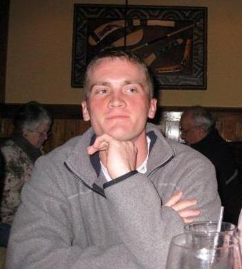
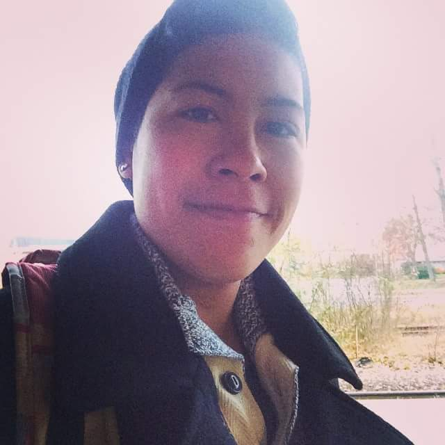

I am currently studying web development at Code Fellows. Some of my greatest strengths are problem solving and attention to detail. As a Navy veteran and a computer science college graduate, I am looking to land a role as a software developer. I am hoping to work with a company where I can contribute value and continue to grow in my career. LinkedIn

Hi! I'm Nikki, Code Fellows student and ninja extraordinaire. I'm currently studying fullstack web development and I excel at working in a team to make clients ideas come to fruition. I'm interested in securing a role at a company that will be able to utilize my soft skills and leadership qualities to increase their client base while developing my technical skills. LinkedInPeter Murphy's the name and ping pong's muh game. I'm a veteran of the United Stated Navy and was recently honerably discharged. I have a love of exploring ideas and cheese. I recently discovered that there is a quality of beer above what is on offer at the local 7-11 and I specifically enjoy marzen lagers. LinkedInMy name is Rick and my favorite food is sushi. I'm new to coding but I'm interested in learning as much as I possibly can. I'm especially interested in working on application, network, and data security and user testing. In my off time I like to watch movies, play computer games and exercise. linkedin.com/in/richard-bellamy-123410